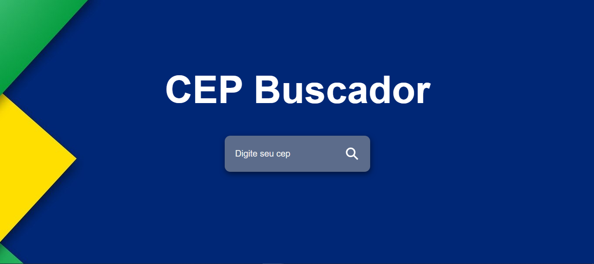
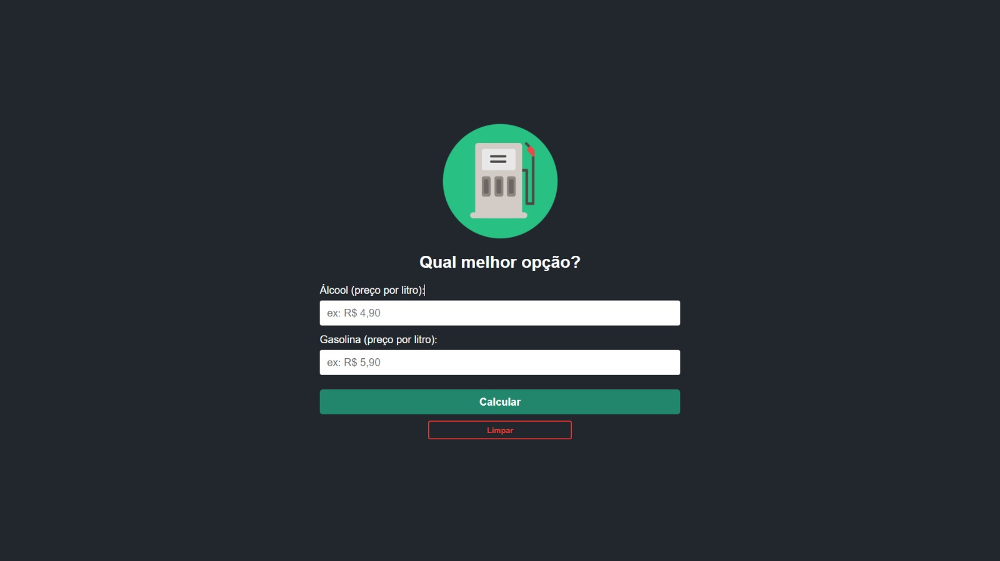
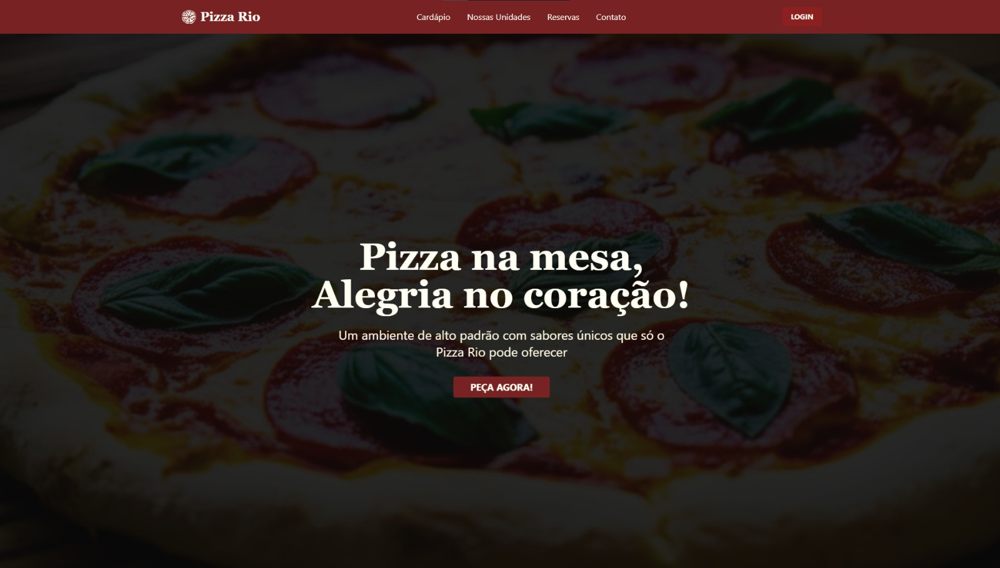
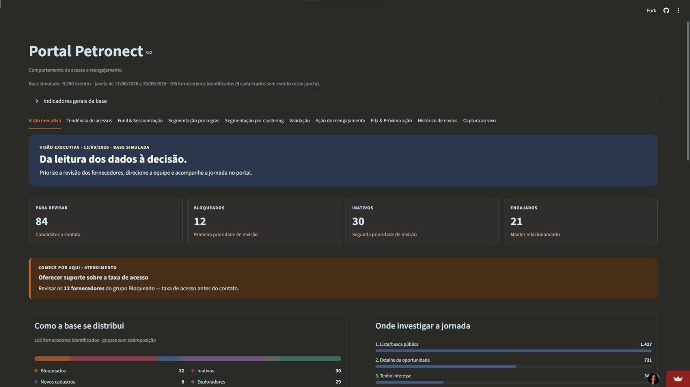

Desenvolvimento Web · UX/UI · Conteúdo Digital
Ingrid Braga
Desenvolvo projetos digitais unindo tecnologia, interface e comunicação.
Projetos
Alguns projetos que já coloquei em prática.
Projetos acadêmicos, pessoais e de hackathon que mostram um pouco da minha forma de trabalhar com tecnologia, interface e produto.



VID
Conteúdo Digital
Conteúdo e edição de vídeo
Criação de materiais para redes sociais, edição de vídeos e organização de conteúdos digitais, usando ferramentas como Canva e CapCut.
Trajetória
De experiências administrativas à criação de produtos digitais.
Minha trajetória começou em atendimento e áreas administrativas, onde desenvolvi organização, comunicação e facilidade para lidar com diferentes pessoas e demandas. Com o tempo, fui me aproximando da tecnologia e descobri que queria criar soluções digitais.
Hoje, uno desenvolvimento web, UX/UI, conteúdo e novas tecnologias para transformar ideias em experiências digitais mais simples, funcionais e próximas das pessoas.
Produto Digital e Conteúdo · Rampa
Atuação em uma startup de soluções digitais com IA, participando de iniciativas que conectam produto, tecnologia, experiência do usuário e comunicação.
- Apoio na estruturação e desenvolvimento de ideias para produtos digitais.
- Participação em pesquisas, entrevistas e iniciativas de UX.
- Criação e organização de conteúdos para Instagram e LinkedIn.
- Apoio em processos de avaliação e seleção de pessoas.
3º lugar · Hackathon Conexão Ancestral
Participação em equipe em um hackathon voltado à criação de soluções para melhorar a jornada e o reengajamento de fornecedores no ecossistema Petronect.
- Pesquisa e estruturação da jornada do usuário.
- Definição de fluxos, segmentação e estratégias de reengajamento.
- Aplicação de conceitos de UX/UI, dados e LGPD.
- Participação no pitch e apresentação da solução.
Estágio em Desenvolvimento Web · A2 Solutions
Primeira experiência profissional diretamente ligada ao desenvolvimento, trabalhando com sistemas web e suporte técnico.
- Desenvolvimento e manutenção com PHP, JavaScript, HTML, CSS e MySQL.
- Correção de erros e implementação de melhorias em sistemas.
- Apoio e suporte técnico a usuários e clientes.
Análise e Desenvolvimento de Sistemas · UNISUAM
Graduação concluída em 2025, com formação em desenvolvimento de sistemas, lógica de programação, banco de dados e tecnologias web.
Auxiliar Administrativo · Transportes Gabardo
Experiência com rotinas administrativas, faturamento e organização de documentos em uma empresa do setor de transportes.
- Controle de planilhas e organização de informações.
- Apoio em faturamento e emissão de documentos.
- Comunicação com motoristas, equipes e setores internos.
Habilidades
O que eu uso para tirar uma ideia do papel.
Desenvolvimento Web
HTML · CSS · JavaScript · React · PHP · MySQL · Git · GitHub
UX/UI
Figma · Wireframes · Protótipos · Interfaces · Usabilidade · Design responsivo
Conteúdo Digital
Canva · CapCut · Edição de vídeo · Roteiros · Redes sociais · Materiais digitais
IA e ferramentas digitais
Pesquisa · Ideação · Organização de conteúdo · Ferramentas de IA · Apoio à criação de produtos digitais
Contato
Tem uma ideia? Vamos conversar.
Rio de Janeiro, RJ · Aberta a oportunidades, projetos e colaborações na área digital.